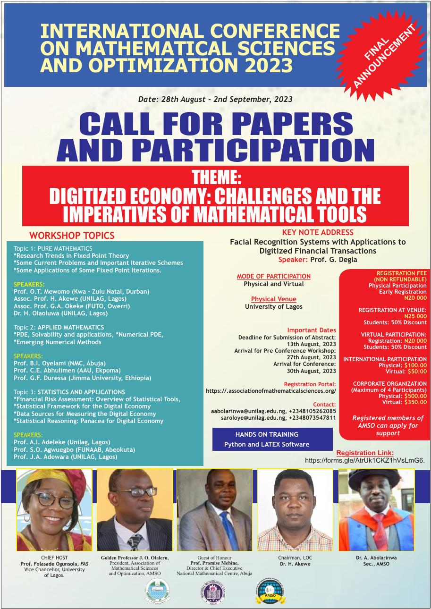

An annual international conference and workshop on mathematical analysis, optimization and their applications — running since the mid-2010s under MANORG, and now convened by AMSO.

Dates: 28 August – 2 September 2023
Venue: University of Lagos (physical & virtual)
Keynote: “Facial Recognition Systems with Applications to Digitized Financial Transactions” — Prof. G. Degla
Tracks: Pure Mathematics, Applied Mathematics, Statistics & Applications
Hands-on training: Python & LaTeX
Registration: ₦20,000 (early) / ₦25,000 (at venue) local · $100 international physical / $50 international virtual · 50% student discount.
Tracks: Computational Fluid Dynamics · Computational Optimization · Financial Mathematics & Applied Statistics · Mathematical Analysis & Optimization. Hands-on training in R and LaTeX. Co-hosted with IMSP Benin — AMSO's first conference outside Nigeria.
Presented by AMSO in collaboration with the Mathematical Analysis and Applications Research Group (MAARG), Department of Mathematics, University of Lagos. Special guest of honour: Prof. A. A. Arigbabu, Commissioner for Education, Ogun State.
Keynote: Dr. Ogbonnaya Onu, Honourable Minister of Science & Technology, Federal Republic of Nigeria. Workshop groups: Operator Equations & Optimization, Machine Learning Techniques & Optimization (CNN, RNN, Swarm Optimization, Big Data), Techniques for Modelling Real-Life Problems. Hands-on training in Python, R and MATLAB/Maple.
Keynote: Mr. Festus Olabiyi, FCIIN, Executive Director, Capital Express Assurance Ltd. Workshop groups: Convexity & Optimization Methods; Network Optimization & Machine Learning. Invited speakers included Prof. C. E. Chidume, Prof. Chris Thron, Prof. Guy Degla and Prof. Jules Degila.
Keynote address: Prof. Stephen E. Onah, Director/Chief Executive, National Mathematical Centre, Abuja. Workshop topics included evolutionary algorithms, inertial algorithms for optimization, optimization in Hilbert spaces, and variational inequalities.
Invited speakers: Prof. Montaz Ali (Wits, South Africa), Prof. Mujahid Abass (Pretoria, South Africa), Prof. Christopher Thron (Texas A&M, USA), Prof. M. Osilike (UNN, Nigeria), Prof. Aderemi Adewunmi (KwaZulu-Natal, South Africa). Workshop topics included Object Python for optimization, evolutionary algorithms, and fixed point theory.
Keynote: Prof. Panos M. Pardalos, University of Florida. Also featuring Prof. Charles E. Chidume and Prof. Christopher Thron. Workshop topics: Octave & Python for scientific computing, genetic algorithms, fixed-point theory, statistics for analytics and decision-making.
Edition numbering (3rd Annual in 2016) indicates the series began around 2014; the secretariat can confirm and add details for the 1st, 2nd and 8th editions to complete this archive.
International and Nigerian scholars present on the conference theme, followed by open discussion.
Pre-conference training in Python, R, LaTeX, MATLAB/Maple and applied optimization software.
Accepted abstracts are presented at the conference; full papers go through journal-based review for the IJMAO.